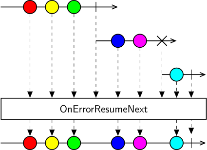

Class OnErrorResumeNext
Represents an operator that concatenates any number of observable sequences even if any of the sequences terminates exceptionally.

The OnErrorResumeNext operator allows you to combine the output of multiple sequences of the same type into a single sequence. OnErrorResumeNext subscribes to each sequence in turn, emits all the values from that sequence until termination, and then subscribes to the next sequence, even if the previous sequence has terminated with an error. Each sequence is guaranteed to only start after the previous one terminates.
The resulting sequence will always terminate successfully when the last source sequence has terminated.
Inherited Members
Namespace: Bonsai.Reactive
Assembly: Bonsai.Core.dll
Syntax
[Combinator]
public class OnErrorResumeNextMethods
| Improve this Doc View SourceProcess<TSource>(IObservable<TSource>, IObservable<TSource>)
Concatenates the second observable sequence to the first observable sequence upon successful or exceptional termination of the first.
Declaration
public IObservable<TSource> Process<TSource>(IObservable<TSource> first, IObservable<TSource> second)Parameters
| Type | Name | Description |
|---|---|---|
| IObservable<TSource> | first | The first observable sequence. |
| IObservable<TSource> | second | The second observable sequence. |
Returns
| Type | Description |
|---|---|
| IObservable<TSource> | An observable sequence that concatenates the first and second sequence, even if the first sequence terminates exceptionally. |
Type Parameters
| Name | Description |
|---|---|
| TSource | The type of the elements in the source sequences. |
Process<TSource>(IObservable<TSource>[])
Concatenates all of the specified observable sequences, even if the previous observable sequence terminated exceptionally.
Declaration
public IObservable<TSource> Process<TSource>(params IObservable<TSource>[] sources)Parameters
| Type | Name | Description |
|---|---|---|
| IObservable<TSource>[] | sources | The observable sequences to concatenate. |
Returns
| Type | Description |
|---|---|
| IObservable<TSource> | An observable sequence that concatenates the source sequences, even if a sequence terminates exceptionally. |
Type Parameters
| Name | Description |
|---|---|
| TSource | The type of the elements in the source sequences. |